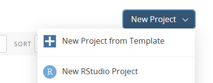
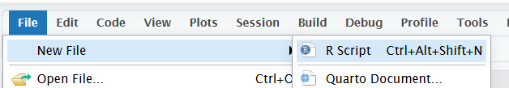
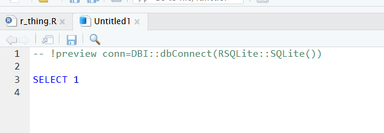

No feedback found for this session
An introduction to SQL
SQL
beginner
Introduction
- This course is designed as a basic introduction to SQL delivered as live interactive sessions on Teams
- It’s intended as a light introduction for users with good general digital skills (broadly level 2 in the Digital and Data Capability Framework)
- It’s heavily based on the excellent W3 schools introductory SQL course
- If you’re looking for a resource to use to support independent study, W3 schools is a better option than this page
- this material is largely intended to support our live interactive training sessions
- we use posit.cloud for this course. Although that platform is mainly meant for analysts writing R code, we can trick it to allow us to practice our SQL skills
Setup
You will need a free posit.cloud account. Please set this up and check that you have access before the session begins
Once you’ve logged-in to posit.cloud, please create a new Rstudio project 
In that project, create a new R script: 
Copy and paste the following R code into that script:
## install and attach R packages
pkg <- c("dbplyr", "RSQLite", "palmerpenguins")
install.packages(setdiff(pkg, rownames(installed.packages())))
library(dbplyr)
library(dplyr)
library(palmerpenguins)
conn <- src_memdb() # create an sqlite db in memory
copy_to(conn, penguins, overwrite = T) # populate that db from R- save your script and click the
Sourcebutton- that will create a simple SQL database in memory
- now create a new SQL script (again, from the
Filemenu) - delete all the pre-populated lines of code, as follows: 
- to connect with our SQL db in memory, add the following line to the head of your SQL script:
-- !preview conn=src_memdb()$con- finally, save your SQL script (any file name is fine)
Getting started
Our db has one table, named penguins. A table is similar to an Excel sheet - a rectangular set of rows and columns containing our data. To preview our data, we’ll need to write a first line of SQL. Please add the following to the bottom of your SQL script:
SELECT * FROM penguins;| species | island | bill_length_mm | bill_depth_mm | flipper_length_mm | body_mass_g | sex | year |
|---|---|---|---|---|---|---|---|
| Adelie | Torgersen | 39.1 | 18.7 | 181 | 3750 | male | 2007 |
| Adelie | Torgersen | 39.5 | 17.4 | 186 | 3800 | female | 2007 |
| Adelie | Torgersen | 40.3 | 18.0 | 195 | 3250 | female | 2007 |
| Adelie | Torgersen | NA | NA | NA | NA | NA | 2007 |
| Adelie | Torgersen | 36.7 | 19.3 | 193 | 3450 | female | 2007 |
| Adelie | Torgersen | 39.3 | 20.6 | 190 | 3650 | male | 2007 |
| Adelie | Torgersen | 38.9 | 17.8 | 181 | 3625 | female | 2007 |
| Adelie | Torgersen | 39.2 | 19.6 | 195 | 4675 | male | 2007 |
| Adelie | Torgersen | 34.1 | 18.1 | 193 | 3475 | NA | 2007 |
| Adelie | Torgersen | 42.0 | 20.2 | 190 | 4250 | NA | 2007 |
- SQL queries usually start with the
SELECTkeyword, which retrieves data from the database -
*means “show me everything!” -
FROM penguinsspecifies that we want everything from the penguins table. That specification is important, because most real-life SQL set-ups will have multiple tables of data -
;ends the line. Not essential, but good practice -
Important: press
Ctrl+Shift+Enterin the source code pane to run your SQL script
Playing with that query
- We’ll now change that one query to do something slightly different
- Unlike most other languages, you’ll write SQL queries one at a time
- Add a new keyword
LIMIT 5at the end of your query to produce a shorter preview of our data:
SELECT * FROM penguins LIMIT 5;| species | island | bill_length_mm | bill_depth_mm | flipper_length_mm | body_mass_g | sex | year |
|---|---|---|---|---|---|---|---|
| Adelie | Torgersen | 39.1 | 18.7 | 181 | 3750 | male | 2007 |
| Adelie | Torgersen | 39.5 | 17.4 | 186 | 3800 | female | 2007 |
| Adelie | Torgersen | 40.3 | 18.0 | 195 | 3250 | female | 2007 |
| Adelie | Torgersen | NA | NA | NA | NA | NA | 2007 |
| Adelie | Torgersen | 36.7 | 19.3 | 193 | 3450 | female | 2007 |
- SQL is case insensitive - including for column names etc - but it’s customary to use capitals for the keywords. It makes your SQL easier to read, too.
Exercise
- please could you modify your SQL statement to preview the first 10 rows of the data
SQL dialects
- SQL has been around for a very long time, and has been used in lots of different ways
- That means there are several slightly different dialects of SQL which are (unfortunately) incompatible
- We’ll largely ignore those differences in this beginner’s training
- But, just to illustrate, the
LIMITkeyword is one that only works in some types of SQL - If you were using Microsoft’s dialect of SQL, you’d need to write something slightly different:
SELECT * TOP 5 from penguins;- Or if you were using Oracle’s newest dialect of SQL, you’d write either:
SELECT * FROM penguins FETCH FIRST 5 ROWS ONLY;- Or, an older - but possibly neater - way of writing Oracle SQL:
SELECT * FROM penguins WHERE ROWNUM <= 5;Columns
- you can select some of your columns by changing the
SELECT *keyword- the
*we’ve been using so far is a wildcard, which shows all the columns in your table
- the
- add column name(s) to retrieve just parts of your data
SELECT species, island FROM penguins;| species | island |
|---|---|
| Adelie | Torgersen |
| Adelie | Torgersen |
| Adelie | Torgersen |
| Adelie | Torgersen |
| Adelie | Torgersen |
| Adelie | Torgersen |
| Adelie | Torgersen |
| Adelie | Torgersen |
| Adelie | Torgersen |
| Adelie | Torgersen |
- note that columns are returned in the order you ask for them
- you can also rename selected columns using
AS:
SELECT species, island AS landmass
FROM penguins;| species | landmass |
|---|---|
| Adelie | Torgersen |
| Adelie | Torgersen |
| Adelie | Torgersen |
| Adelie | Torgersen |
| Adelie | Torgersen |
| Adelie | Torgersen |
| Adelie | Torgersen |
| Adelie | Torgersen |
| Adelie | Torgersen |
| Adelie | Torgersen |
- note too that SQL is insensitive to whitespace, so you can generally split up longer queries over many lines
- an alternative strategy (if you’re brave) is to use implicit renaming:
SELECT island landmass FROM penguins;| landmass |
|---|
| Torgersen |
| Torgersen |
| Torgersen |
| Torgersen |
| Torgersen |
| Torgersen |
| Torgersen |
| Torgersen |
| Torgersen |
| Torgersen |
Exercise
- please select the
speciesandflipper_length_mmcolumns with new names of your choice
Distinct values
SELECT DISTINCT species FROM penguins;| species |
|---|
| Adelie |
| Gentoo |
| Chinstrap |
-
DISTINCTgathers the unique values in a column, or unique combinations of values across multiple columns - this second query gives you all the combinations of penguins and islands that exist in our data:
SELECT DISTINCT island, species FROM penguins;| island | species |
|---|---|
| Torgersen | Adelie |
| Biscoe | Adelie |
| Dream | Adelie |
| Biscoe | Gentoo |
| Dream | Chinstrap |
Acknowledgements
Like all our courses and sessions, this is a team effort, and I thank the network as a whole for their encouragements and contributions. Specific thanks in this case go to Amanda King (NHS GGC), Steven Knapman (NHS Fife), and James McMahon (Public Health Scotland), and to the members of the pilot cohort for this session.
Comments
--double-dash to comment a line, or part of a line/*and then*/slash-star to comment a multi-line chunk